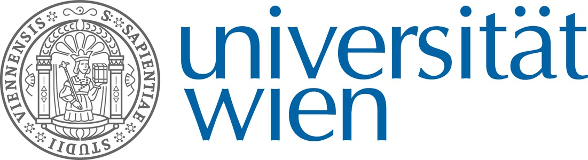

Welcome to the BBNJ negotiations at a glance
The ‘BBNJ Agreement’, the ‘High Seas Treaty’, or its hefty full title: the ‘Agreement under the United Nations Convention on the Law of the Sea on the Conservation and Sustainable Use of Marine Biological Diversity of Areas beyond National Jurisdiction’ was adopted on 19 June 2023, entered into force on 17 January 2026, and will host its first Conference of the Parties (COP) in January 2027.
But how did we get here?
The negotiations leading up to the BBNJ Agreement and its first COP are complex, and keeping tabs on everything can be a challenge.
By our count, 0 actors have discussed 0 packages and agenda items across 0 meetings so far, including 0 official sessions and at least 0 intersessional and online dialogues.
Here we have created an overview based on our own field note data from the negotiations, giving you a bird’s-eye view of the whole process from its first IGC meeting in 2018 to the last PrepCom in 2026. Scroll your way downwards and click around to learn more about specific items and actors.
Who are we?
First, a quick introduction to us.
We are researchers of the MARIPOLDATA (2018-2025) and TwinPolitics (2024-2029) projects, funded by the European Research Council and led by Dr. Alice Vadrot. We study multilateral negotiations on biodiversity, deep-sea mining, and plastics in areas beyond national jurisdiction.
Together, we have spent more than 1,000 hours collecting structured field notes on the BBNJ negotiations, on-site and online. All in all, our database consists of 0 individual observations covering the entire negotiation process from 2018 to today. The data from 2018-2024 is available online for download through the Austrian Social Science Data Archive.
Want to know exactly how we collect our data? We have written a paper about it: [Title of the methods paper] doi.org/10.1177/14687941251341984

The BBNJ Agreement was adopted in its final form on 19 June 2023.
There were seven official meetings leading up to its adoption,
and three following it to prepare for its implementation and the first COP.
In addition to many intersessional and online dialogues.
The seven meetings leading up to the adoption were Intergovernmental Conferences (IGCs). Here, the text and its central package elements were negotiated.
[One sentence on marine genetic resources, including benefit sharing.]
[One sentence on area-based management tools, including marine protected areas.]
[One sentence on environmental impact assessments.]
[One sentence on capacity-building and the transfer of marine technology.]
There have also been three Preparatory Commissions (PrepComs) after its adoption to negotiate the institutional infrastructure of the Agreement.
The most discussed items were:
It’s a complex process with many moving parts. In our data, we count 0 statements delivered across plenaries, working groups, and informal sessions:
More than 120 states took an active part in the negotiations, and over 180 were represented through country blocs.
In addition, over 70 nongovernmental and international actors took part.
To date, 144 states and the EU have signed the Agreement, and 104 states and the EU have ratified it. It entered into force on 17 January 2026, 120 days after its 60th ratification.
Click on a country to see its ratification status, how many statements it has made during the negotiations, and on which topics it was most active. Toggle country blocs off to see only statements made in a national capacity.
Do you have your own question about the process? Try playing with our data yourself:
Next up is the COP in January. The TwinPolitics team will be there to continue collecting our data.
In the meantime, here you can find all of our BBNJ-related publications so far:
Or dive into our curated list of BBNJ-relevant literature here:
BBNJ literature